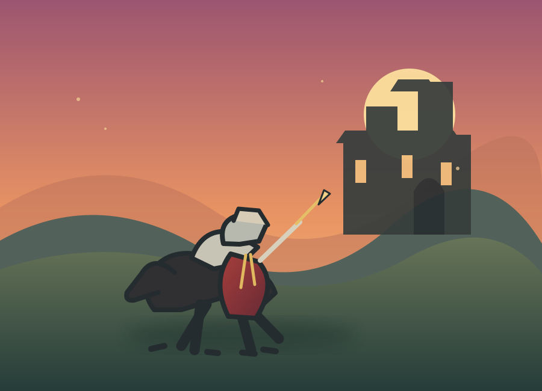

Повернення лицаря
Айвенго повертається з походу, але його батько Седрік позбавив сина спадку через вірність королю Річарду та кохання до Ровени.
Історичний роман Вальтера Скотта
Історія про лицарську честь, відвагу та боротьбу за справедливість у середньовічній Англії.
Дізнатися більше
Коротко про твір
«Айвенго» — історичний роман шотландського письменника Вальтера Скотта, опублікований 1819 року. Події відбуваються в Англії наприкінці XII століття, за правління короля Річарда I.
У центрі твору — лицар Вілфред Айвенго, який повертається додому після хрестового походу. Він прагне відновити добре ім’я, здобути кохання леді Ровени та примирити ворогуючих норманів і саксів.
Події твору
Айвенго повертається з походу, але його батько Седрік позбавив сина спадку через вірність королю Річарду та кохання до Ровени.
Приховуючи своє ім’я, лицар бере участь у турнірі. Його мужність і майстерність привертають увагу присутніх.
Айвенго проходить через небезпеки та несправедливість. Повернення Річарда допомагає відновити порядок, а герої отримують шанс на щасливе майбутнє.
Персонажі
Відважний саксонський лицар, вірний королю Річарду. Уособлює честь, мужність і прагнення до справедливості.
Англійський король, який повертається з хрестового походу. Він сміливий і справедливий, хоча часто діє імпульсивно.
Шляхетна саксонка, кохана Айвенго. Її образ пов’язаний із вірністю, гідністю та надією на мир.
Дочка єврейського лікаря Ісаака. Розумна й милосердна, вона виявляє мужність і самопожертву.
Батько Айвенго, який мріє відновити незалежність саксів. Через гордість він конфліктує із сином.
Храмовник і супротивник Айвенго. Його честолюбство та внутрішній конфлікт приводять до трагічних наслідків.
Головна думка